← 返回阅读库 · 原论文目录
论文讲解阅读文档 · 表征学习 · v166
Keeping Your Eye on the Ball: Trajectory Attention in Video Transformers
视频时长 00:19:42；讲解文字 8,404 字符；提取讲解画面 64 张。按视频原顺序阅读，每段文字保留时间戳。
文字来自整段视频的自动语音转写，按自然停顿分段，并与 PPT / 论文页面 / 演示画面对齐。未将讲解压缩为摘要；术语、数字和口述公式请结合画面及原论文核对。 阅读稿已校正规范部分明确术语误识别；原始逐字稿和每处修改记录另行保留。
讲解画面为源视频截图（640×360），不是可编辑 PPT 文件。全片按每秒 2 帧扫描内容变化，逐步展开页保留；连续动画保留代表画面。清晰度受源视频限制。
下载完整资料包 · 含离线 HTML、PDF、Word、全部 PPT 画面和字幕。
原论文与材料
Keeping Your Eye on the Ball: Trajectory Attention in Video Transformers · 下载完整 PDF（19 页）
按时间阅读
00:00:00–00:00:10 · 画面 001
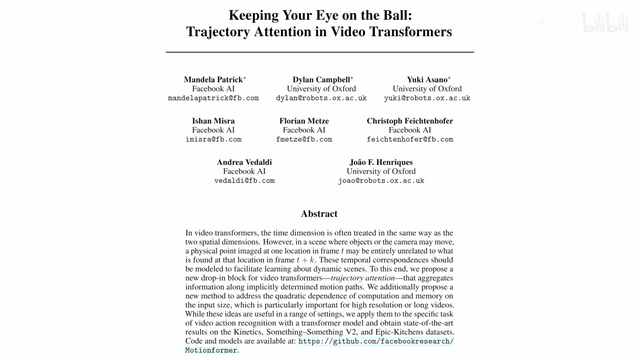
00:00:00–00:00:10 · 画面 001大家好啊，今天我们要快速说一篇论文 Keeping your eye on the ballTraditional attention in video transformers。那这篇论文的主要贡献呢，来自两个，一个是这个 video self-attention。作者呢，这里提出了一种这个 traditional attention，讲了一个很好的故事，但是呢，这个 traditional attention 它的计算代价是很高的。那么为了简化这个计算呢，作者又提出了这个 autoformer
00:00:10–00:00:34 · 画面 002
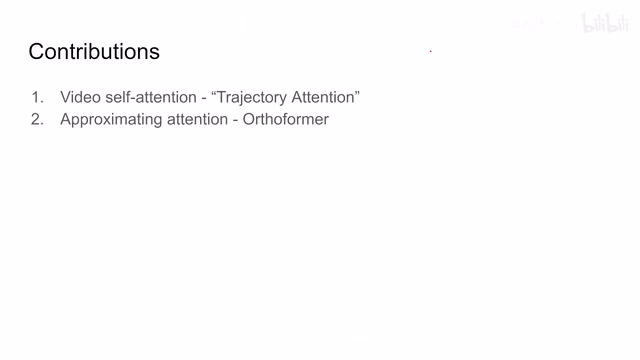
00:00:10–00:00:34 · 画面 002去近似这个 attention 的操作那么下面呢我们就来看作者的实现细节首先呢是这个 trajectory 的 attention 那么这里呢作者认为说我们不同针之间注意到了这个 attention 它们之间应该是相互关联的比如说这个踢球对吧你在第一针注意到这个球都是值得我们注意的对象那么后面几针呢大家都应该一直看这个球所以呢这里作者说呢先做一个 spatial attention
00:00:34–00:01:17 · 画面 003
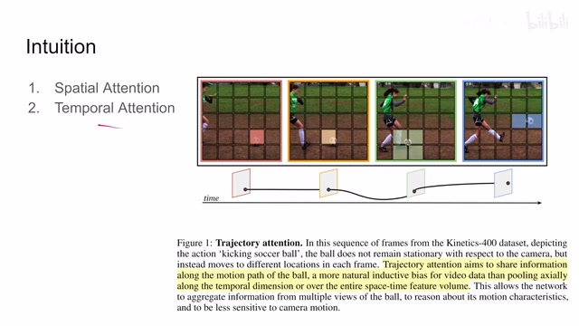
00:00:34–00:01:17 · 画面 003然后呢，在此基础上再做一个 temporal attention。这样两个 attention 加在一起呢，希望我们的这个网络呢，能够一直一直跟着我们这个需要检测的目标。可以说是作者的一个美好的愿望。那下面呢，我们就来看作者是怎么样实现这个具体的过程的。这个呢，就是本文的这个核心 projective attention。那么当然，介绍 attention 之前，我们先了解 attention 位置放在哪儿对不对
00:01:17–00:01:38 · 画面 004
00:01:17–00:01:38 · 画面 004我们首先要知道这个 attention 是用在 transformer 里面的。transformer 里面是先有 attention 再有 mlp。那么把这一层 transformer 加起来就是整个一个网络。那么你可以看到本文的这个 flowchart，这里呢，进来一些 tokent 呢，就是时间尺度上我们有的 token 的数量 s 呢，是这个空间尺度上我们有的 token 的数量。这个呢，后面我们仔细会涉及。你可以看到呢，这里作者先做了一个 spatial attention
00:01:38–00:01:39 · 画面 005
00:01:38–00:01:39 · 画面 00500:01:39–00:01:51 · 画面 006
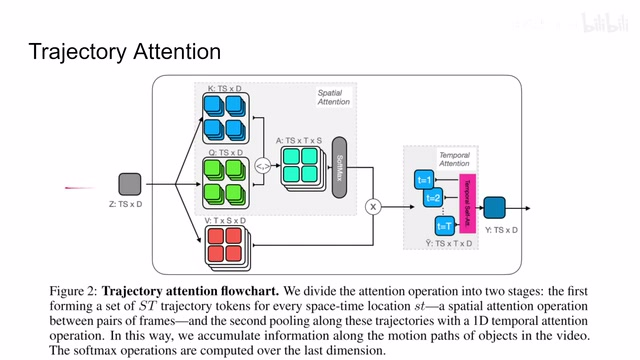
00:01:39–00:01:51 · 画面 00600:01:51–00:01:52 · 画面 007
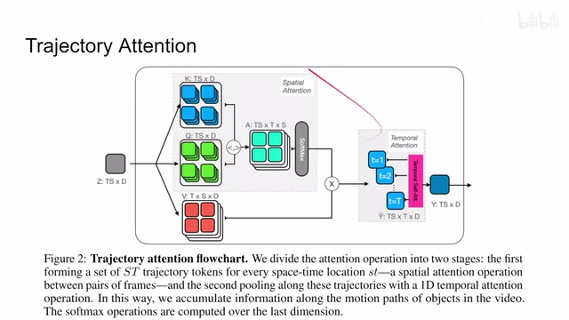
00:01:51–00:01:52 · 画面 00700:01:52–00:02:15 · 画面 008
00:01:52–00:02:15 · 画面 008在空间尺度上做一些文章，那么和这个 value 搞在一起搞一搞，搞好之后呢，我们再做这个 temporal attention。看起来是在每一帧上哎，又做了一些文章。最后呢，作为这个 attention 的输出，那下面呢，我们就来逐步的去分析这一串 token 进来之后经过哪些操作。当然呢，这个图里面呢，是不包含这个 classification token，那么他的实现呢，也非常简单，我们马上就会涉及到。
00:02:15–00:02:17 · 画面 009
00:02:15–00:02:17 · 画面 00900:02:17–00:02:23 · 画面 010
00:02:17–00:02:23 · 画面 01000:02:23–00:04:05 · 画面 011
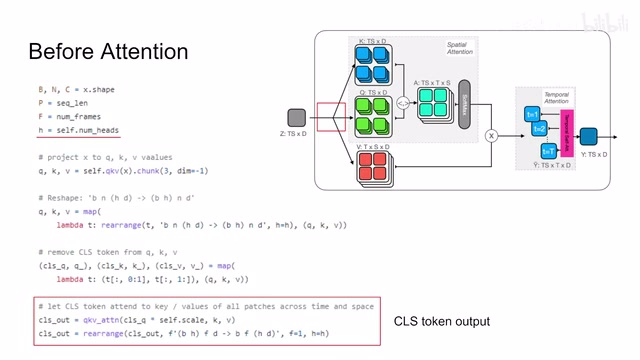
00:02:23–00:04:05 · 画面 011那首先来到网络的最开始，我们一开始经历了这个原始的视频做 tokenize 之后呢，加上 positional embedding。这里的 positional embedding 呢，它有两种，这个 spatial 的空间尺度上的这个 temporal 时间尺度上这个 positional embedding。两个这个 positional embedding 都加到我们的这个 token 里面，然后呢，可以送到我们这里来了。首先很常规的是把我们这个 token 送到 mlp 里面闪成这个 query key 和这个 value
那么既然大家输的尺寸都是 ts 乘 d，那么出来的这个尺寸呢，也都是 ts 乘 d 啊，这个没问题。然后呢，我们要开始对这个计算进行变形了。那我们知道我们的 transformer 里面的 attention 呢，是 multi-head style of a attention，是有很多个 head，也就是说有很多个这个不同的 channel 在分别进行。所以呢，你可以看到在这里我们提出来这个 query key value 之后呢，首先要做呢，是把我们的这个 head用的 head 给它拆分出来，那每个 channel 呢就各自独立运算，可以看到这里把这个 head 这个 dimension 的塞到我们这个 batch 这个 dimension 里面，那这样子呢我们就把它不同的 channel 当做不同的 batch 来做，那么随后呢我们来看到这里的 classification token，这里呢作者直接把这个 classification token 从我们的这个 token 这个 list 中拿出来了，拿出来之后呢计算我们的 classification token 和这个 key query 和这个 value
之间他们的这个 attention 是一个标准的这个点，成了一个 attention，计算完之后呢，再把它这个不同的 head 再重新塞回到原来这个格式，这个呢，作为 classification token 的输出。这里呢，我们就把这个 classification 就交清楚了，他这个 head 呢，就直接传递到下一层了。那么这里呢，是我们做正式的 attention 之前做的操作，那么最后呢，我们就往下走，就要看到这个 spatial attention。
00:04:05–00:04:06 · 画面 012
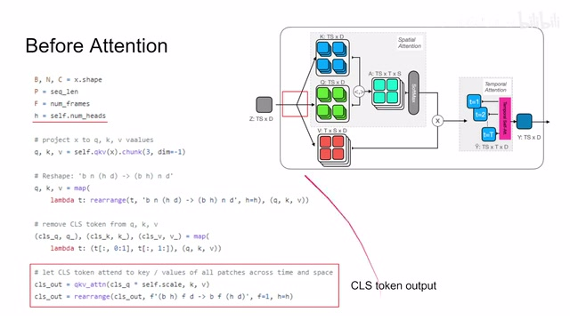
00:04:05–00:04:06 · 画面 01200:04:06–00:04:11 · 画面 013
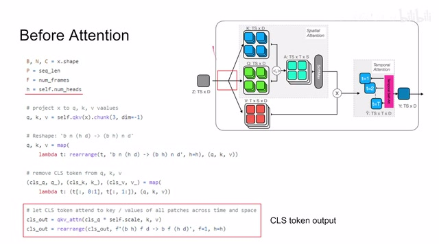
00:04:06–00:04:11 · 画面 01300:04:11–00:04:13 · 画面 014
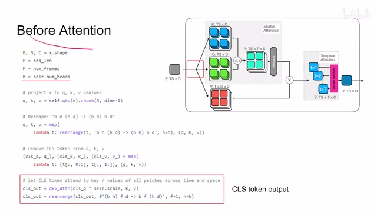
00:04:11–00:04:13 · 画面 01400:04:13–00:04:16 · 画面 015
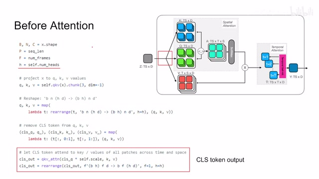
00:04:13–00:04:16 · 画面 01500:04:16–00:04:35 · 画面 016
00:04:16–00:04:35 · 画面 016其实这里他做的是一个 joint 的 attention，但是呢又不完全是要说呢，他是介于 spatial 和 joint 之间的一种很神奇的这种一个 attention，那么在此之前呢，首先我们再次来看几个变量的这个名字啊，那首先 t 呢就是 temporaltemporal resolutionor number of frames，这里呢就是每一帧图像我们提的这个 token，这里呢就是相当于我们在时间尺度上会存在多少个 token
00:04:35–00:04:36 · 画面 017
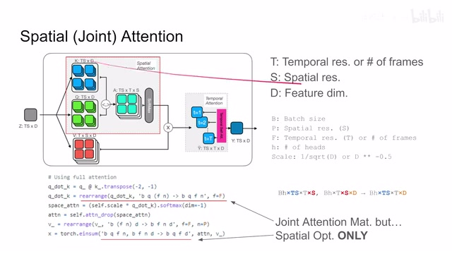
00:04:35–00:04:36 · 画面 01700:04:36–00:06:35 · 画面 018
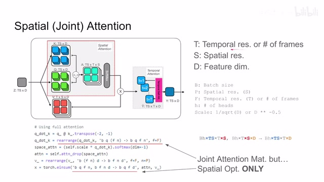
00:04:36–00:06:35 · 画面 018那相应的 s 呢就是我们在空间尺度上存在多少个 token，也就是一张图上有多少个 token，那这个 d 呢就是我们的这个每个 token 它的 feature 的数量，那么这几个代表呢是我们这个图里面使用的，这里呢它用的这个变量跟之前我们介绍的不太一样，我们来重新看一下这里的这个 b 呢是这个 batch sizet 呢是这个 spatial resolution 对应的这里的 s f 呢是这个 tamper resolution 对应的这里的这个 t，那么 h 呢是这个 head 的数量，那最后呢这个 scale 就是除以根号下这个 d 的经典的这个 attention 的这个 normalize 的这个过程，那么介绍完这个之后呢，我们就来看首先这个 spatial attention 之间发生了什么，我们这里呢有之前介绍了计算好的这个 query 和 key，那么 query 和 key 呢它进来之后呢都是这个 batch size 乘以 ts 乘以 d 这样一个形式
至于这里呢我们的这个不同的这个 head 呢已经加到这个 batch size 里面了，就他呢在这个 batch size 这个地门身上，然后呢就是经典的这个规律和 key 相互称嘛对吧，你有 ts 的 token ，我有 ts token，那么在每一个位置上呢都是这个 d 的这么一个 vector，他们的内积，那么这样称出来呢本来应该得到这个 ts 乘 ts 的这样一个 attention 的矩阵，这里呢作者呢做了第一个处理，就是可以看到我们把后面的 ts 给它拆开拆成了 t 乘以 s ，就是这里，所以 attention 的 matrix 或者叫 tensor 它的形式应该是长的这个样子，就是 batch size 乘以 head 前面数量，这个是第一个 dimension，第二个 dimension 还是 ts token 的数量完全不变，第三个 dimension 和第四个 dimension 分别是 temporal 的 resolution 和 spatial resolution，这个是 attention 的矩阵
00:06:35–00:06:36 · 画面 019
00:06:35–00:06:36 · 画面 01900:06:36–00:07:58 · 画面 020
00:06:36–00:07:58 · 画面 020那么像后面呢这个 softmax 和这个 scale normalization 这些东西呢对吧我们都是常规的操作了那么再来看到 value 这边 value 呢我们一进来是这个 ts 乘 d 没有错那这里呢作者首先做了一个操作就是把我们这个 ts 拆开拆成了这个 t 乘 s 乘 d 那具体呢就是这样一个形式那么这样两个大的 tensor 他们放在一起相乘做这个 attention 嘛就是这里这个 x 的操作其实呢相当于就是你把这些相同的这些 dimension 去掉不用管就是相当于在它们对应的位置上做了一个二维的矩阵的乘法你可以看到左边呢这个 attention 的这个 tensor 呢它呢是这个 ts 乘 s 这样一个结构右边呢这个 value 这个值呢是这个 s 乘 d 这样一个尺寸那么它们呢沿着这个 s 这个边相乘乘出来的结果呢便是这个 ts 乘 d 这样一个矩阵
然后呢把之前没有动的这些对面声给它写进来啊就是这样的一个形式这个呢就是这个差之后出来的啊到我们下一步 temporal 这个 attention 之前的这么一个 tensor 它的尺寸那么这个呢就是这个 spatial attention 这个实现的细节那么下面呢我们就该找不同的帧之间他们的这个 attention 的关系了马上呢就进入到这个 temporal attention 这个环节了那么来看到这个 temporal attention 啊
00:07:58–00:07:59 · 画面 021
00:07:58–00:07:59 · 画面 02100:07:59–00:08:11 · 画面 022
00:07:59–00:08:11 · 画面 02200:08:11–00:08:52 · 画面 023
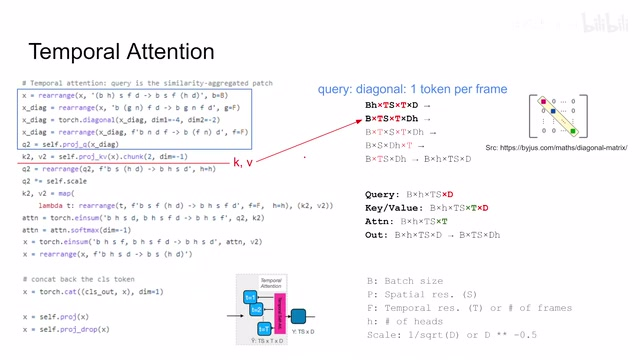
00:08:11–00:08:52 · 画面 023他的这个实现呢是非常 confusing 的我们慢慢来捋啊那首先上来我们在这个 spatial attention 做完之后呢得到的是这样一个 x 那么他的尺寸呢是这个 batch size head 对吧这个是所有的 token 对吧这个 temporal 的 token 和 dimension 因为这个 spatial 的这个 attention 我们已经做完了 spatial dimension 就不存在了这里呢一上来做的操作就是把我们不同的 head 呢又塞回到了我们这个 d 这个 dimension 里面那么塞回来这个 tensor 呢一方面它送到我们这个 projection network 里面它得到了这个 key 和这个 value 那另一方面呢我们要用它来产生 queryquery 的产生呢不好产生首先呢这里呢作者把它这个形式继续来拆拆成了这样的一个形式相当于把这个 temporal 给它拿了出来
00:08:52–00:08:53 · 画面 024
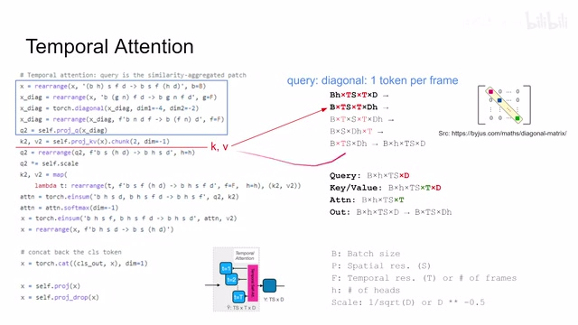
00:08:52–00:08:53 · 画面 02400:08:53–00:09:18 · 画面 025
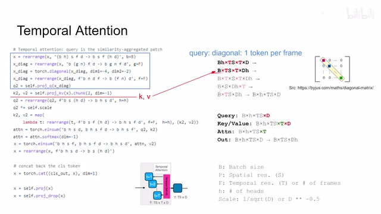
00:08:53–00:09:18 · 画面 025然后呢两个 temp 我们把这两个轴选中那么选出来的这样一个矩阵呢它是一个二维矩阵嘛每一个边长都应该是 t 那这里呢作者做了一个操作叫 diagonal 对吧是取这个 t 乘 t 的这个矩阵它对角线上的元素那 t 乘 t 的矩阵它对角线上肯定直接有 t 个元素嘛取出来这个 t 个元素呢放到这个大的 tensor 的这个后面
00:09:18–00:09:19 · 画面 026
00:09:18–00:09:19 · 画面 02600:09:19–00:11:19 · 画面 027
00:09:19–00:11:19 · 画面 027那这一步操作呢相当于在我们这个 temporal domain 上就是时间这个序列里面每一针我取一个 token 来去代表我们当前这一针啊来形成这个 query 的这个前提接下来呢就是一同变形的操作我们把这个 temporal 这个轴呢模回到跟我们这个 spatial 这个轴上来啊他们一起这样子 token 的数量呢又跟原来这个 token 的数量匹配了那么得到这个东西呢你可以散到我们送到这个 projection 里面做做出来这个 query 呢然后呢再按照这个 head 给它拆开最后我们得到这个 query 的这个形状呢就是这个样子那有了这个 query 有了这个 key 还有这个 value 啊做 attention 就是了嘛首先呢这个 query 和 key 出一个 attention matrix 吧啊在这里一个是长度为 d 的 vector 一个是 t 乘 d 的那么一个矩阵那么这样长出来之后呢这个 feature 和这个 feature 沿着这个轴相乘所以它就消失了嘛
那得到呢就是一个长度为 t 的这么一个 vector，那么这个东西呢再跟我们的这个 value 相结合啊，b 乘 h 乘这个 ts 还是前面这些东西一样的，我们不用管它，一个是 t，一个是这个 t 乘 d 的这么一个矩阵，那么这个结合之后呢就相当于把这个 t 沿着这个边削掉了，就只剩下这个 d，那么这样子呢我们这一层的输出呢就变成了形入这样的一个结构那记得把这个 head 塞回到 d 里面，这里又做了一个 projection，做完之后呢我们就可以作为这个 attention 的输出了，后面呢你再放到 mlp 里面，这样一层 transformer 可以了叠很多层 transformer 对吧，就是我们整个的网络，这个呢是这个 temporalattention，那这里呢我们要注意一点呢就是对这个 head 它的处理，我们在计算 attention 的时候是不希望它出现在这个 d 这里的，因为我们是 multi-head self-attention
00:11:19–00:11:36 · 画面 028
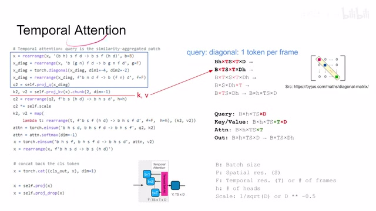
00:11:19–00:11:36 · 画面 028对吧，不同 head 我们希望他们有不同的功效，不要相互搞在一起，那么当然这个 attention 计算前后呢对吧，他们就可以相互搞在一起了，相互交流一些信息了，这个呢是你在实现的时候要注意的一个地方，那么当然呢你也注意到了，我们在一开始做 spatial attention 的时候，那所有的这个 token 很长的这个 patch 的序列大家做了一个很巨大的这个 attention mat，也就是这里一个 ts 称 ts
00:11:36–00:11:38 · 画面 029
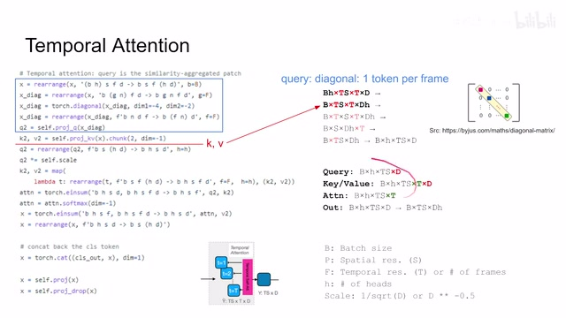
00:11:36–00:11:38 · 画面 02900:11:38–00:11:44 · 画面 030
00:11:38–00:11:44 · 画面 03000:11:44–00:11:55 · 画面 031
00:11:44–00:11:55 · 画面 03100:11:55–00:11:56 · 画面 032
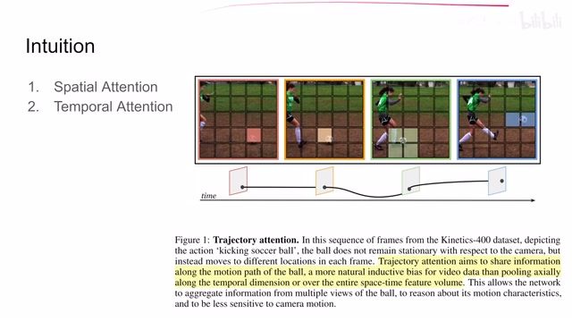
00:11:55–00:11:56 · 画面 03200:11:56–00:11:57 · 画面 033
00:11:56–00:11:57 · 画面 03300:11:57–00:11:58 · 画面 034
00:11:57–00:11:58 · 画面 03400:11:58–00:12:07 · 画面 035
00:11:58–00:12:07 · 画面 035巨大的这么一个 attention mat，那么直接计算它肯定是消耗相当大的内存的，怎么办呢，这里作者就提出了一种对 attention 近似，那么当然在原文中作者用概率什么这些乱七八糟的东西讲了一个看起来不错的故事，但是你一看它其实明显是在摆烂，这里我们还是介绍一下作者设计的过程供大家参考，这里作者故事的起点在于我们假设 attention matrix
00:12:07–00:12:08 · 画面 036
00:12:07–00:12:08 · 画面 03600:12:08–00:13:38 · 画面 037
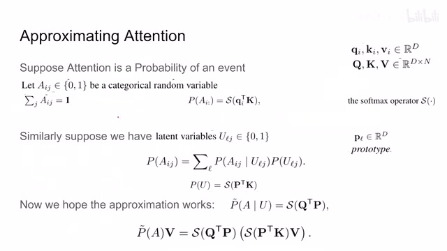
00:12:08–00:13:38 · 画面 037它呢是一个事件的这么一个概率，那么你想呢，假如说我们有这个 aij 啊，这个 attention 举证里面的每一个元素呢，它呢是一个随机变量，这个随机变量呢不是 0 就是 1，而且呢这一行的这个随机变量呢每次呢只能有一个是 1，那么这样下来呢，这一行这个事件发生的概率呢，是我们这个行这个 query 乘上我们这个 key 然后呢做这个 softmax这里的 query 和 key 它这个形式是这样的，这个没毛病吧，一个定义相当于把我们原来是矩阵乘矩阵给它拆分到一个行或者说一个列乘上了一个矩阵，这样是一个定义，那么现在呢我们来假设我们有一个 latent variable 这么一个 u，那么它呢跟这个 a 一样也是这个只能从 0 和 1 之间开始选，但是呢这个 l 可取的值呢跟 j 可取的值是不一样的
一般呢为了这个提高效率的这个 l 可取的值呢是远远小于这个 j 可取的值的，那我们先不管这个取值的范围呢，然后呢我们开始用这个条件概率啊，aij 这个点上的这个 attention，这个点上他这个事件的这个概率啊，他呢本质上一个条件概率，那其中呢就包含了一项这个 ulg 他的这个独立分布的这么一个概率，这项
00:13:38–00:13:39 · 画面 038
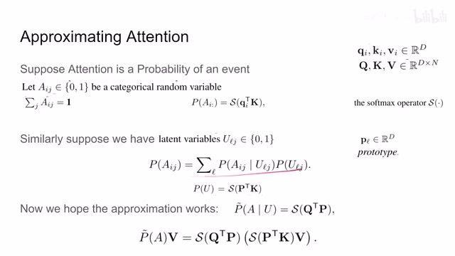
00:13:38–00:13:39 · 画面 03800:13:39–00:14:56 · 画面 039
00:13:39–00:14:56 · 画面 039那么因为我们这个 u 呢我们构造它的时候呢想了它跟这个 a 是类似的一个东西，而这个 a 的这个概率呢我们用的是一个 query 承让这个 k 的这么一个矩阵啊，softmax 搞出来的，这是我们的定义吧，那同样的呢我们就想我们可不可以通过相似的方式来给它构造出一个它的定义来呢，这里呢我们假设有一个叫做 prototype 这个 p 这么一个 vector我们想这个小 P 的这个 vector 乘上这个 K 然后呢 softmax，那么就定义出了这个 ULG 它这个事件的概率，那么你把它写成整个大的矩阵的形式，我们把所有这个小的 prototype 给它叠成一个大的这个矩阵，这个 P 嘛，那它乘以这个 K 那就是这个 U 就是这一下了，很好，我们解决了这个式子中的这个部分，那它怎么表示呢不太好表示
怎么办嘛，摆烂吧啊，我们希望这个近似成立，也就是我们的这个 q 这个矩阵他这么承认这个 p 之后，这个 softness 一步啊，哎，他就神奇的能够近似这个概率了。那这样子近似一个好处之后呢，就是把这个式子往这里面带一带，把这个式子往这里面带一带啊，那这个东西写出来呢就是这个样子。这里呢，我们假设这个 prototype 他有 r 个
00:14:56–00:14:57 · 画面 040
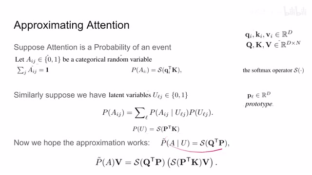
00:14:56–00:14:57 · 画面 04000:14:57–00:15:15 · 画面 041
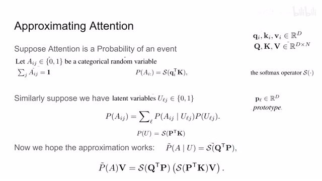
00:14:57–00:15:15 · 画面 04100:15:15–00:15:16 · 画面 042
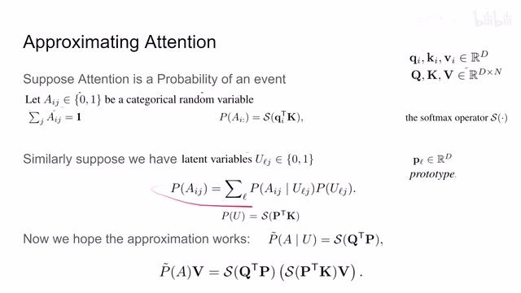
00:15:15–00:15:16 · 画面 04200:15:16–00:15:19 · 画面 043
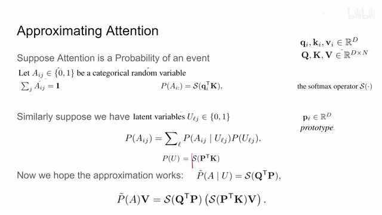
00:15:16–00:15:19 · 画面 04300:15:19–00:15:40 · 画面 044
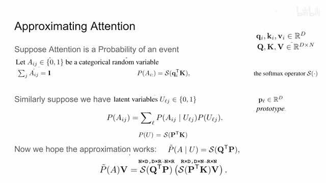
00:15:19–00:15:40 · 画面 044这个 R 呢是远远小于 N 的，我们分别计算这两个矩阵，那得到的这个尺寸呢可以看到是一个是 N 乘 R，一个是 R 乘 N。它们呢相当于原来直接计算这个 N 乘 N 这么一个大的一个矩阵来讲，这个在空间上节约很大。那么当然有了这个心思之后呢，我们需要关注的问题呢就是这个 prototype 这个矩阵这个 P 该怎么选。那因为我们这个
00:15:40–00:16:16 · 画面 045
00:15:40–00:16:16 · 画面 045prototype 的数量呢是远小于这个 token 的数量，所以呢我们希望这个 prototype 呢他尽量分布在我们整个的这个 revolution space 这个表达的这个空间里面，他呢把我们整个这个表达的这个空间给他支援起来。要避免就是说啊，我们虽然用了很大计算量，但是每一个 vector 都长得差不多，这就没啥意义了。那么为了选出这样一个 prototype 呢
00:16:16–00:16:17 · 画面 046
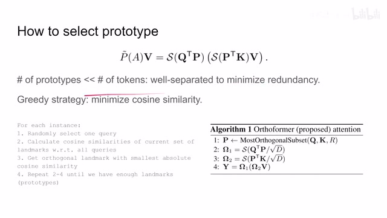
00:16:16–00:16:17 · 画面 046作者呢这里直接说用了一种贪婪的这个策略啊，本质上呢是找这个 cos similarity 最低的，就是相互正交嘛，对吧？这样子呢他们能够支撑起来空间呢也就越复杂。那进行怎么操作呢，很简单，首先呢我们在所有的这个 query 里面选出一个来啊，它呢作为开始。这里呢就是作者在代码中呢把这个 prototype
00:16:17–00:16:21 · 画面 047
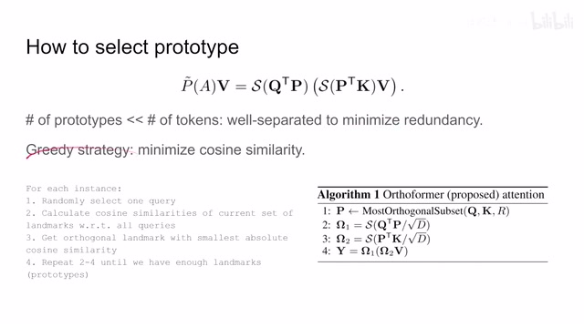
00:16:17–00:16:21 · 画面 04700:16:21–00:16:22 · 画面 048
00:16:21–00:16:22 · 画面 04800:16:22–00:16:36 · 画面 049
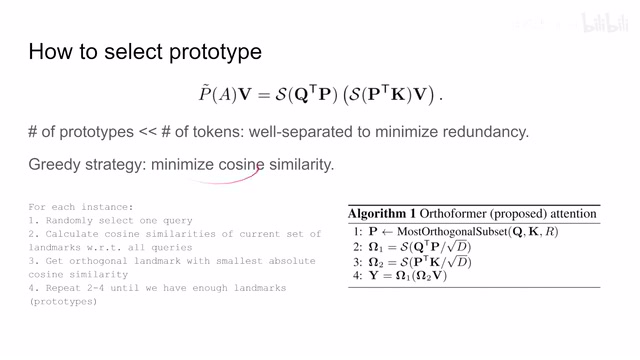
00:16:22–00:16:36 · 画面 04900:16:36–00:16:37 · 画面 050
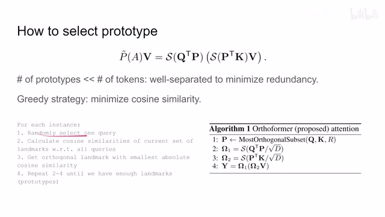
00:16:36–00:16:37 · 画面 05000:16:37–00:16:59 · 画面 051
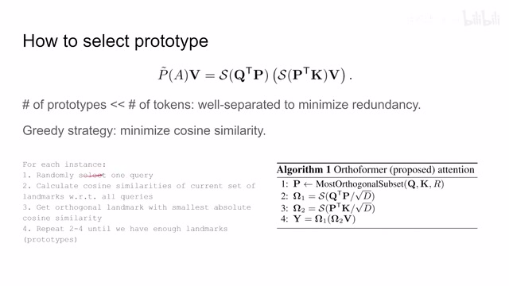
00:16:37–00:16:59 · 画面 051叫这个 landmarks，我们尊重代码呢就直接这里写 landmarks。那你知道他就是这个 prototype。我们选出一个 query 作为一个现成的这个 prototype 之后呢，我们计算所有的这个 query 和当前这个 landmarks 他们之间的这个 cos similarity。那当然因为现在呢我们只有一个嘛，我们就开始计算算好了之后呢，我们选一个和 similarity 最低的这个叫这个正交的这个 landmark
00:16:59–00:17:43 · 画面 052
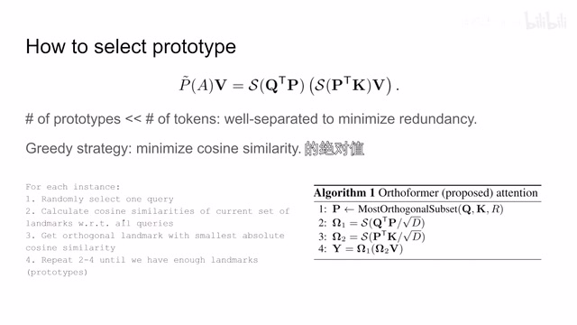
00:16:59–00:17:43 · 画面 052我们把这个新选出来的这个 landmark 加入到我们之前的这个 landmark 这个这个集合里面，然后呢就可以再循环了对吧还是算我们 landmarks 和所有的这些 query 他们这个相似的程度啊选一个相似程度最低的也就是相互性能正交的靠的 similarity 最低的对吧加进去重复一直到我们选购的为止啊那这个方法呢它不是一个全局的最优的方法那你没有对你没有用什么动态规划这些东西都没有啊但是呢一个贪婪法作者说呢够用了那么左边这一套东西呢浓缩到这里呢就帮我们找到了
00:17:43–00:17:44 · 画面 053
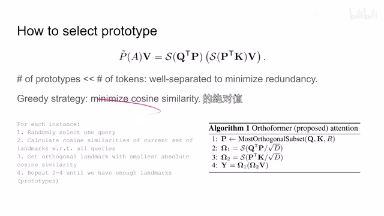
00:17:43–00:17:44 · 画面 05300:17:44–00:17:52 · 画面 054
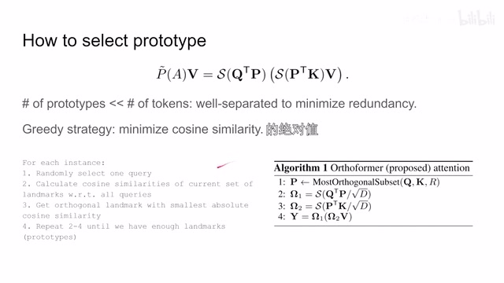
00:17:44–00:17:52 · 画面 054这个 p 然后呢你再算这两个矩阵的操作啊，再算出来这个最后的腾讯的矩阵就可以了。那这个呢就是本文提出的这个高效的腾讯这个 Orthoformer 他的这个原理，他呢只应用在我们这个 spatial 这个腾讯这个发生的过程中，因为在这一部分呢他托克的数量是庞大的，我们的这个腾讯 matrix 他的这个需要的内存呢是最多的。好的，那么以上就是本文主要的技术细节了
00:17:52–00:17:54 · 画面 055
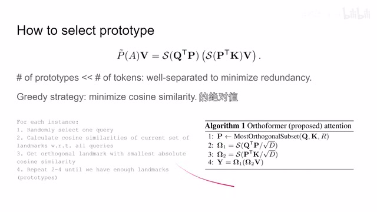
00:17:52–00:17:54 · 画面 05500:17:54–00:18:08 · 画面 056
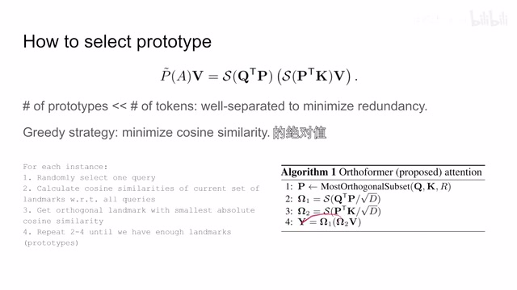
00:17:54–00:18:08 · 画面 05600:18:08–00:18:25 · 画面 057
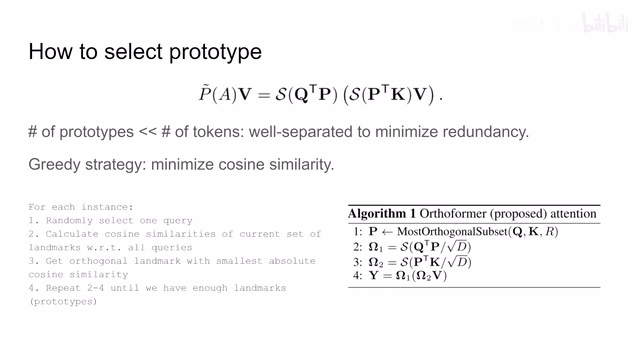
00:18:08–00:18:25 · 画面 057一个新颖的这个水来水的灯神，一个高效这个灯神的一个近似。那么下面来看错了汇报的结果吧，首先是一对 ablation 啊，比如说这个 input decoding 就是如何变成 token 对吧，然后呢这个 Orthoformer 啊，我们他对比其他的这些啊，提高这个灯神的性能这个方法，这个 port type 的数量对吧，选择 port type 的方法等等，感兴趣的朋友呢
00:18:25–00:18:39 · 画面 058
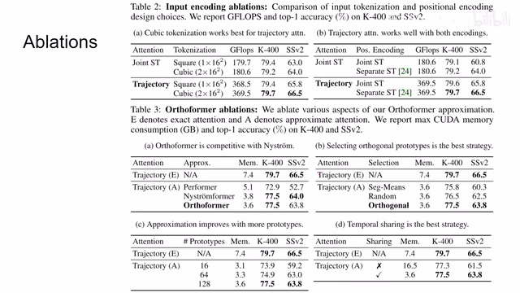
00:18:25–00:18:39 · 画面 05800:18:39–00:18:40 · 画面 059
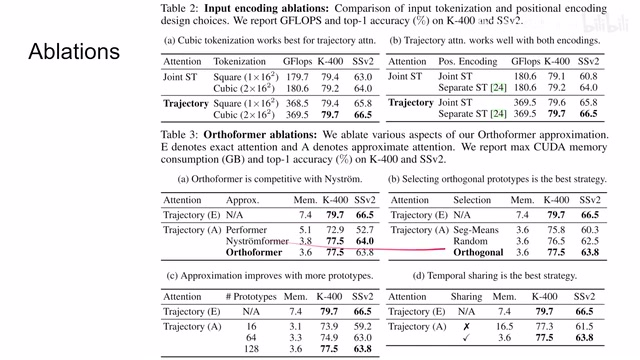
00:18:39–00:18:40 · 画面 05900:18:40–00:18:49 · 画面 060
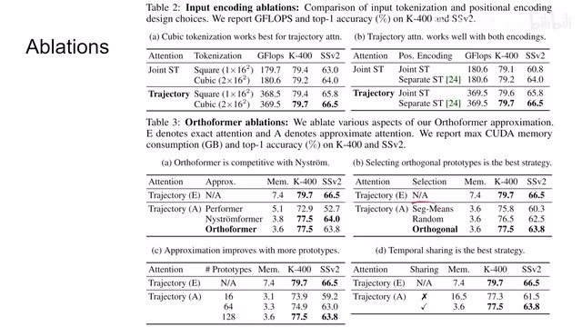
00:18:40–00:18:49 · 画面 060取原文好好看一下它的描述，更多的 evolutions 这里看到一些美好的数字就可以了。那么再往下作者汇报一些主要的结果 something somethingkinetics 老朋友的对吧，感兴趣的朋友可以查看一下作者具体的一些数据。那么最后一个 visualization 当然作者选这些图可能是因为纸在这些图里面运作的比较好
00:18:49–00:18:56 · 画面 061
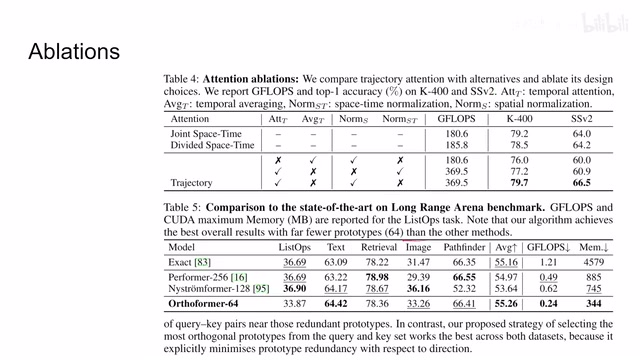
00:18:49–00:18:56 · 画面 06100:18:56–00:19:06 · 画面 062
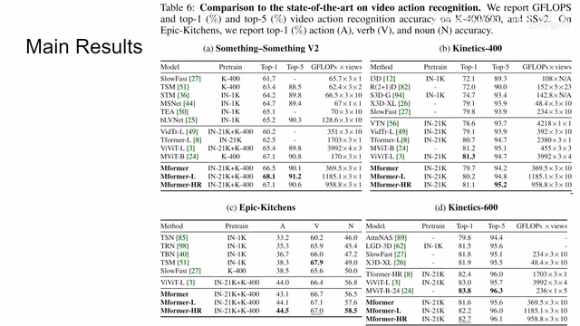
00:18:56–00:19:06 · 画面 06200:19:06–00:19:41 · 画面 063
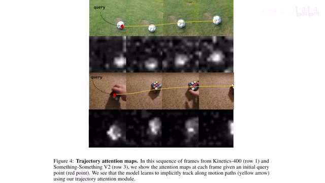
00:19:06–00:19:41 · 画面 063换了个其他的这种视频的效果呢，就不是这么明显了。当然了，这也是个很好的开始。就是不同针之间的这个 attention 的 map，他们确实似乎应该有点相互的关系。怎么样去利用这个关系呢？对吧，感兴趣的朋友呢，可以继续在这个方向研究下去。好的，那么以上呢，就是我对这个论文的一个简单的一个介绍。那么感谢您的收看，我们明年再见。
00:19:41–00:19:42 · 画面 064
00:19:41–00:19:42 · 画面 064转写与来源说明 · 0 个自动复核提示
保留 42 个原始语音片段，0 个片段触发自动复核提示。提示仅用于定位可能的术语、重复或识别问题，不等于已确认错误。
讲解画面为源视频截图（640×360），不是可编辑 PPT 文件。全片按每秒 2 帧扫描内容变化，逐步展开页保留；连续动画保留代表画面。清晰度受源视频限制。
原视频：paper/合集_2026-10-16_表征学习/[论文简析]Keeping Your Eye on the Ball Trajectory Attention...[2106.05392].mp4
SHA-256：411ca79136d70ebadd0ca939c3b488d1d19be1b9bab3f3353b868b85c6d02f73
全文按视频语音与画面制作。原论文可从上方链接下载；完整资料包保留全文、原始逐字稿、字幕和校对记录。